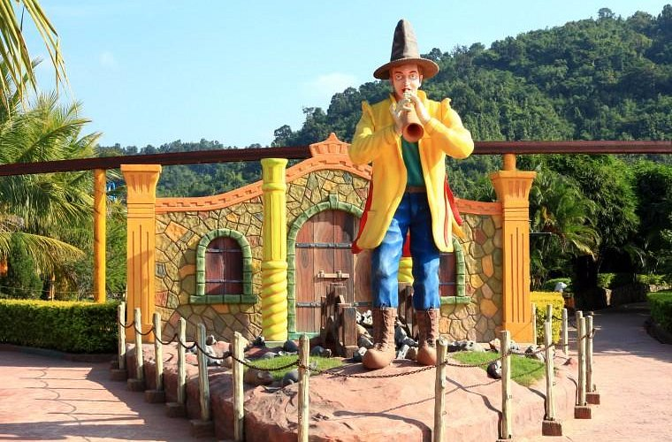
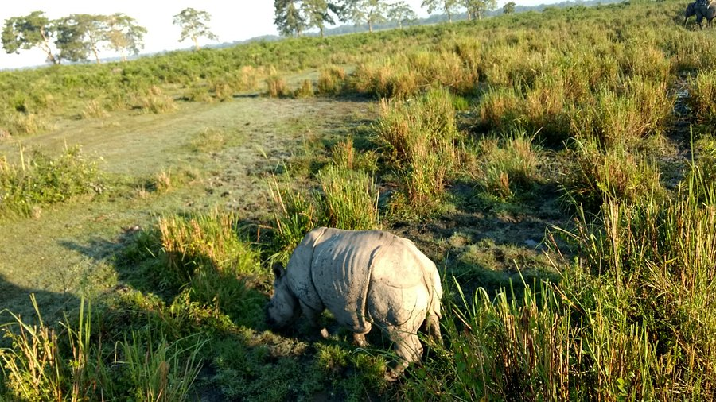
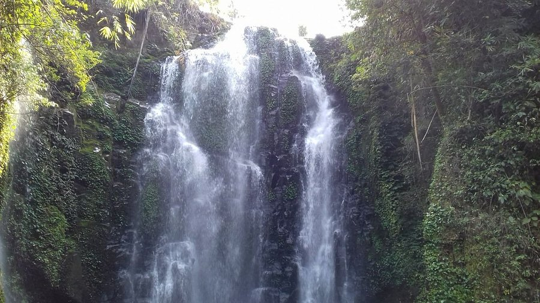
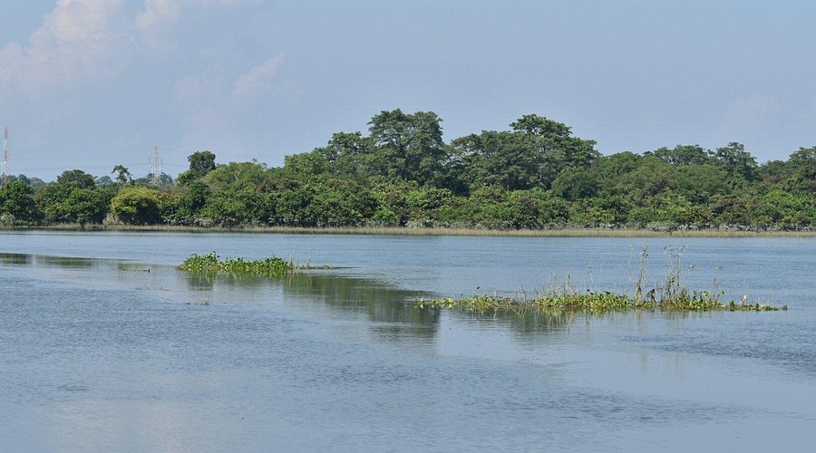
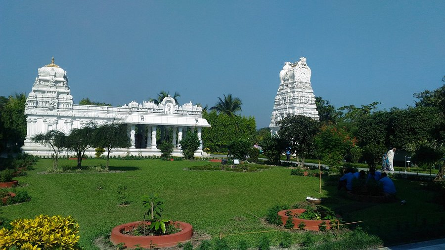
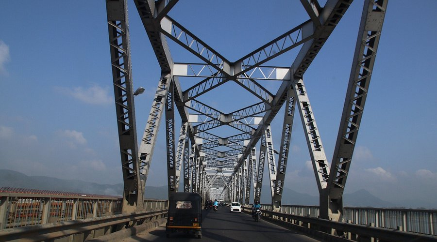

Famous Places
Accoland
Amusement & water park providing a variety of rides, slides & other attractions for all ages.
Kamakhaya Temple

The Kamakhya Temple at Nilachal hills in Guwahati, Assam is one of the oldest and most revered centres of Tantric practices, dedicated to the goddess Kamakhya. The temple is the center of the Kulachara Tantra Marga and the site of the Ambubachi Mela, an annual festival that celebrates the menstruation of the goddess.
Kaziranga National Park
Kaziranga National Park is a national park in the Golaghat, Sonitpur, Biswanath and Nagaon districts of the state of Assam, India. KNP has 5 ranges. The park, which hosts two-thirds of the world's Indian rhinoceroses, is a UNESCO World Heritage Site.
Kokochang Waterfalls
Kakochang waterfall is also a well-known tourist attraction/picnic spot near Kaziranga. The remains of the historical Numaligarh can also be viewed from this place. The waterfall is located about 13 km from the Bokakhat, a place in the Jorhat Region of Assam. Situated between the Kaziranga National Park and Bokakhat, it is a prominent local eat-outside picnic spot. Few of the famous attractions nearby this waterfall are ruins of Numaligarh, ruins of Deoparbat or Deopahar, landscapes of tea, coffee, and rubber farms.
Pobitora Wildlife Sanctuary
Pobitora Wildlife Sanctuary is a wildlife sanctuary on the southern bank of the Brahmaputra in Morigaon district in Assam, India. It was declared in 1987 and covers 38.85 km², providing grassland and wetland habitat for the Indian rhinoceros. It holds one of the largest Indian rhinoceros population in Assam.
Purva Tirupati Shri Balaji temple
Purva Tirupati Sri Balaji Mandir was constructed in a plot of land measuring approx. 17 acres of land. The temple was constructed with the blessings of Their Holinesses Shankaracharya Swamijis of Shri Kanchi Kamakoti Peetam, Kancheepuram, Tamil Nadu. The design and construction was carried out by famous Stapathi Late Sri Ganapaathi in South Indian architecture. Built to traditional requirements the Temple is considered to be a Replica of Tirupati in the East of India and hence called as Purva Tirupati Balaji temple.
Saraighat Bridge
The Saraighat Bridge is a rail-cum-road bridge over Brahmaputra River in Assam, India and is the first of its kind bridge over the river in the state. The length of the bridge is 1492 meters (4895 feet) and the road on the bridge is 7.3 meters (24 feet) wide.